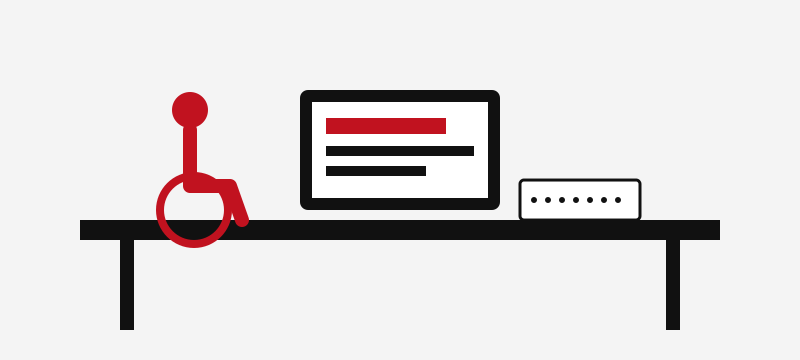

Educação e trabalho: inclusão que começa na escola
Estudar e trabalhar são caminhos para a autonomia. Para muitas pessoas com deficiência, esses caminhos ainda têm obstáculos que podem ser removidos.

O cenário em números
Os dados do Censo 2022, divulgados pelo IBGE em 2025, mostram que as pessoas com deficiência têm menos acesso à escola e ao mercado de trabalho. A taxa de analfabetismo nesse grupo é cerca de quatro vezes maior do que entre as pessoas sem deficiência, e apenas uma parcela pequena, perto de três em cada dez pessoas com deficiência em idade de trabalhar, estava ocupada.
Esses números não falam de incapacidade, e sim de barreiras: escolas sem estrutura, transporte inacessível, preconceito na contratação e falta de adaptações no posto de trabalho.
A escola inclusiva
A Lei Brasileira de Inclusão garante o direito à educação em todos os níveis, em escolas regulares, e proíbe que escolas particulares cobrem valores adicionais pelas adaptações necessárias. Na prática, isso inclui recursos como:
- atendimento educacional especializado, em geral nas salas de recursos multifuncionais;
- profissional de apoio escolar, quando necessário;
- material em braille, fonte ampliada ou formato digital acessível;
- intérprete de Libras e ensino bilíngue para estudantes surdos;
- tempo adicional em provas e adaptação de atividades.
A inclusão beneficia toda a turma: colegas aprendem a conviver com a diferença, e professores desenvolvem estratégias que ajudam outros alunos com dificuldades.
A Lei de Cotas nas empresas
O artigo 93 da Lei 8.213, de 1991, determina que empresas com 100 ou mais empregados reservem de 2% a 5% das vagas para pessoas com deficiência ou reabilitadas pelo INSS. A porcentagem cresce conforme o tamanho da empresa.
| Número de empregados | Percentual mínimo |
|---|---|
| De 100 a 200 | 2% |
| De 201 a 500 | 3% |
| De 501 a 1.000 | 4% |
| Mais de 1.000 | 5% |
Cumprir a cota é o mínimo. Inclusão de verdade significa oferecer plano de carreira, ambiente acessível e respeito, e não apenas preencher uma planilha.
Adaptações razoáveis
A lei chama de adaptação razoável qualquer ajuste necessário para que a pessoa com deficiência exerça seus direitos em igualdade com as demais, sem impor um ônus desproporcional. No trabalho, isso pode ser um software leitor de tela, uma mesa regulável, horários flexíveis para terapias, comunicação por escrito em reuniões ou um intérprete de Libras em treinamentos.
Negar uma adaptação razoável é considerado discriminação pela Lei Brasileira de Inclusão.